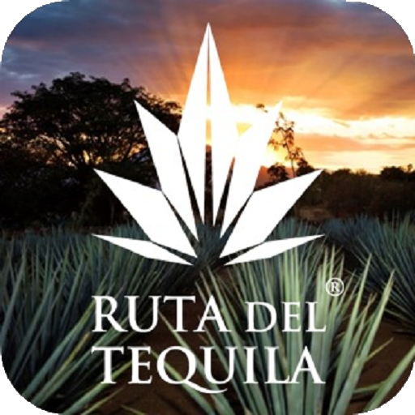

Ruta del tequila

La Ruta del Tequila nos ofrece un viaje a través de la cultura de una de las regiones rurales más emblemáticas de nuestro México y que son reconocidas como símbolos de la mexicanidad, como lo son los Charros, los Mariachi y por supuesto la bebida que ahí se destila el Tequila.
Durante este recorrido conoceremos lo maravilloso que es el agave, materia prima para la elaboración del tequila y el arduo esfuerzo que representa ser agavero y jimador.
Conoceremos ademas una de las fabricas más emblemáticas de la industria tequilera que han dado fama internacional al tequila y disfrutaremos de sus productos tanto Blanco, Reposado y Añejo, lo que nos permitirá adquirir un importante conocimiento en la diferencia de los distintos tipos de tequila.
La Ruta del Tequila es un circuito turístico multitemático que forma parte de las Rutas Turísticas de México y del Estado de Jalisco. Está integrada por los municipios de Tequila (Pueblo Mágico), Amatitán, El Arenal, Magdalena, Ahualulco, Etzatlán, San Juanito de Escobedo y Teuchitlán. Tu decides si visitar la ruta completa o solo algunos pueblos.
Sea cual sea el circuito que realices, visitar la Ruta del Tequila, no sólo ayudará a conocer el proceso de elaboración del tequila, desde la siembra del agave hasta el embotellado de la bebida terminada. También te permitirá ver la otra cara de México. No los populares destinos de playa, sino el día a día en algunos de los pueblos más pintorescas del Estado de Jalisco.
visitar la Ruta del Tequila tendrás la oportunidad de explorar sitios arqueológicos, antiguas casas de estilo mexicano, talleres ópalo y obsidiana, destilerías y el magnífico paisaje agavero. Admirarás las espléndidas construcciones y estilos arquitectónicos de las viejas haciendas, mansiones y tabernas, algunos de ellas más ¡de 500 años de antigüedad!
Por otra parte, los visitantes más aventureros, pueden participar y aprender las tareas de los jimadores y toneleros. Así podras decir que sabes cómo hacer Tequila y obtendrás una buena foto para el Insta.